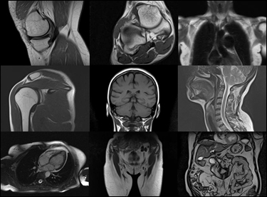

| Identificación de imágenes en el monitor |
|
| La imagen obtenida en RM debe ser interpretada por el médico radiólogo asignado. Para ello deberán entregársele estudios con las secuencias específicas y en los planos indicados en el volante. |
|
 |
|
De manera habitual estarán establecidos las secuencias específicas y planos anatómicos más solicitados en cada servicio en un protocolo específico para cada centro que el técnico deberá conocer y memorizar cuando comience a trabajar con el equipo. |
|
| » Volver |